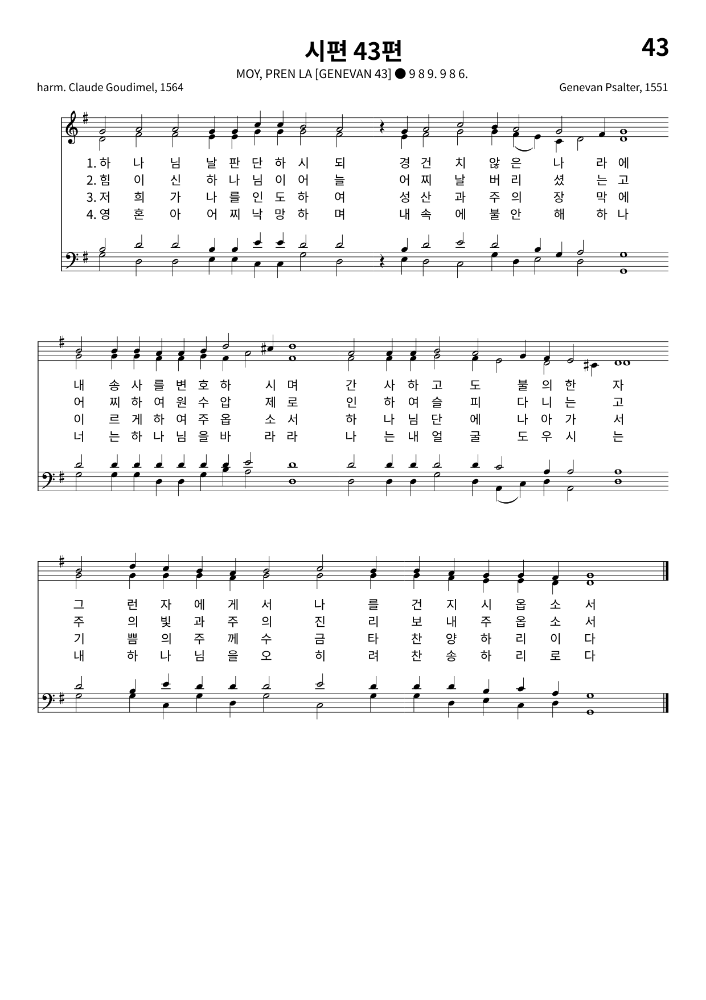

Psalm 43
MOY, PREN LA [GENEVAN 43] · 9 8 9. 9 8 6.
English title: O Judge Me, God of My Salvation
Tune: Genevan Psalter, 1551 · Harmony: Claude Goudimel, 1564 · Lyrics: Korean adaptation of Psalm 43 from the Korean Revised Version (AI draft adaptation · not yet theologically reviewed) · 4 stanzas
Score PDF MusicXML (for printing) MusicXML (for accompaniment, with prelude and repeats) Read Psalm 43 (Korean Revised Version)
Score
← Psalm 42 ListAccompaniment (in preparation)Psalm 44A →
Lyrics (Korean)
Stanza 1
하나님 날 판단하시되
경건치 않은 나라에
내 송사를 변호하시며
간사하고도 불의한 자
그런 자에게서 나를
건지시옵소서
하나님 날 판단하시되
경건치 않은 나라에
내 송사를 변호하시며
간사하고도 불의한 자
그런 자에게서 나를
건지시옵소서
Stanza 2
힘이신 하나님이어늘
어찌 날 버리셨는고
어찌하여 원수 압제로
인하여 슬피 다니는고
주의 빛과 주의 진리
보내 주옵소서
힘이신 하나님이어늘
어찌 날 버리셨는고
어찌하여 원수 압제로
인하여 슬피 다니는고
주의 빛과 주의 진리
보내 주옵소서
Stanza 3
저희가 나를 인도하여
성산과 주의 장막에
이르게 하여 주옵소서
하나님 단에 나아가서
기쁨의 주께 수금 타
찬양하리이다
저희가 나를 인도하여
성산과 주의 장막에
이르게 하여 주옵소서
하나님 단에 나아가서
기쁨의 주께 수금 타
찬양하리이다
Stanza 4
영혼아 어찌 낙망하며
내 속에 불안해하나
너는 하나님을 바라라
나는 내 얼굴 도우시는
내 하나님을 오히려
찬송하리로다
영혼아 어찌 낙망하며
내 속에 불안해하나
너는 하나님을 바라라
나는 내 얼굴 도우시는
내 하나님을 오히려
찬송하리로다